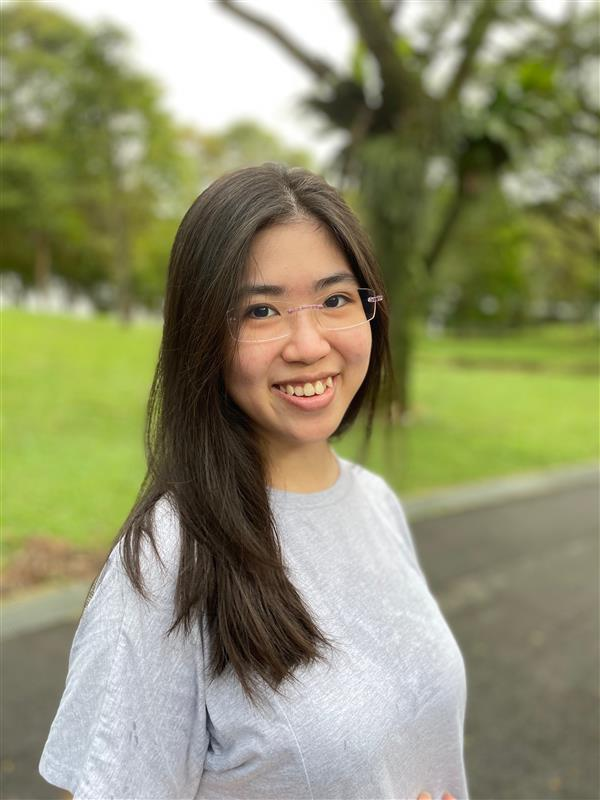

|
 |
ONG Jing HuiHonours Student
Email: e0035279(AT)u.nus.edu |
Background
I am an undergraduate student majoring in Life Sciences and specialising in Environmental Science. Growing up, I have always had a strong interest in the life sciences, especially for ecology and evolution. Studying marine biology had always seemed like a distant dream—-nice but probably unattainable—-until I began my university studies; it seemed like a whole new world with many exciting opportunities had opened up. I am thrilled to embark on my research journey in the Reef Ecology Lab for my Honours project and I seek to learn as much as I can in the process.
Honours Project
My project seeks to understand the diversity and distribution of the endosymbiotic dinoflagellates (Symbiodiniaceae) communities associated with the reef corals of Singapore and Peninsular Malaysia. Through next-generation sequencing and DNA analysis, the Symbiodiniaceae community composition and diversity of three species of hermatypic corals will be investigated: Pachyseris speciosa, Pocillopora acuta and Diploastrea heliopora. An investigation of how Symbiodiniaceae communities change with respect to different coral host species and other ecological as well as anthropogenic factors will provide more clarity on how coral reefs have adapted to current conditions. This will also provide some insight into possible conservation and management strategies to protect our coral reefs.